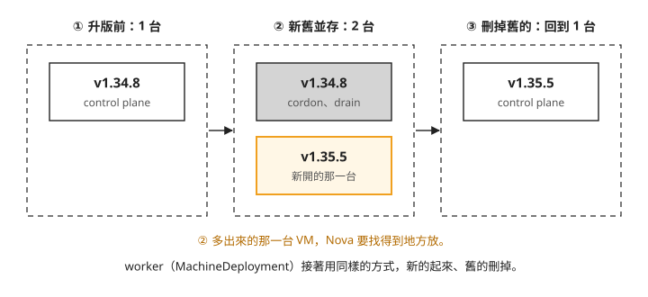
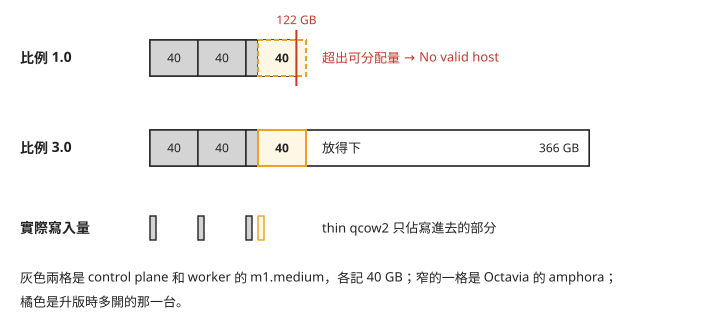
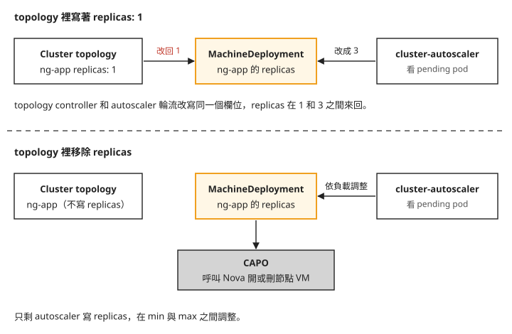
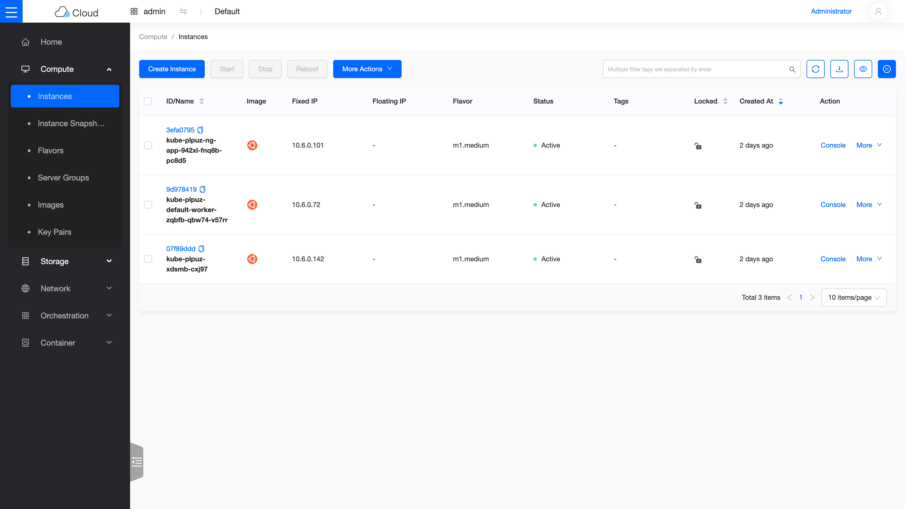

Day 9: Day-2 維運——滾動升版、新增 node group、讓節點自動增減¶
Day 8 開出的 workload cluster k8s-lab 已經能跑應用程式。cluster 建好之後的日常維護,一般叫做 Day-2 維運。這一章做其中最常遇到的三件事:Kubernetes 出了新的小版本,要把 cluster 從 v1.34.8 升到 v1.35.5;某一類工作想放在專用的節點上,要多開一組節點;負載變大時,希望節點數自己增加,負載退了再自己減回來。
這三件事都會讓 Nova 多開 VM。所以除了指令,這一章還要看懂兩件事:新 VM 在 Nova 那邊排不排得進去,以及節點數由誰決定。讀完之後,遇到升版開不出新節點,或節點數自己跳回原值時,你能分辨是 Nova 的 disk 帳不夠,還是有兩個控制器在改同一個欄位。
開始之前¶
這一章接著 Day 8 的環境做:kind management cluster、Magnum 和 Octavia 都要正常運作,k8s-lab 是 CREATE_COMPLETE。主機重開過的話,先照 Day 8 開頭的 Pre-flight 檢查一遍。
本章的指令會在兩座 cluster 之間切換。KUBECONFIG=~/.kube/config 指向 kind management cluster(Day 6 建的,CAPI 的資源都在這裡);看 workload cluster 的節點和 pod,要用 Day 8 從 secret 取出的那份 workload kubeconfig。Day 8 把它存成 /tmp/wl.kubeconfig,檔案不見了就照 Day 8 的步驟再取一次。下面的指令用 <Day 8 的 workload kubeconfig> 代表這個路徑。
升版為什麼要多開一台 VM¶
在 CAPI 上升級 Kubernetes,不會登入舊節點去升級套件,而是用新版本的 node image 開一台新 VM,等它加入 cluster,再把舊的那台移除。這種一次換一台的做法叫 rolling upgrade(滾動升版),替換過程中暫時多出來的那一台叫 surge。
拿 k8s-lab 的 control plane 來看。Day 6 介紹過,control plane 節點由 KubeadmControlPlane 管理,k8s-lab 只有 1 台。把升版過程依時間順序畫出來:

照著圖上的編號看:
- 升版前是一台 v1.34.8。
- KubeadmControlPlane 先把數量從 1 調到 2,開出一台 v1.35.5,等它加入 cluster、etcd 同步完成。接著把舊的那台 cordon(標記成不再接收新的 pod)和 drain(把上面的 pod 移走)。
- 刪掉舊的,數量回到 1。
worker 由 MachineDeployment 管理,接著用同樣的方式替換。這樣換完的節點都是從乾淨的目標版本 image 開起來的,不會帶著舊版升級留下的東西。代價是第 ② 步:替換期間 cluster 會比平常多一台 VM,Nova 必須有空間放它。
步驟 1:讓 Nova 的 disk 帳放得下 surge 那一台¶
Day 8 遇過一次 No valid host:Nova 計算一台主機還剩多少 disk 時,加總的是每台 VM 的 flavor 宣告的磁碟大小,不是實際用量,而且關機(SHUTOFF)的 VM 也算在內。這筆帳記在 placement,也就是記錄每台主機還剩多少資源、Nova 排程時會去問的那個服務。
workload cluster 的節點都是 m1.medium,一台在帳上記 40 GB。以本課的 VM 為例,Nova 帳上的 disk 容量是 122 GB(Day 8 從 hypervisor 資訊看到的數字)。升版開始前,帳上已經有 control plane 和 worker 各 40 GB,再加上 Octavia 的 amphora;surge 再要 40 GB,就超過 122 GB。實際上,nested VM(在這台 Azure VM 裡面再開的 VM)的磁碟是 thin provisioning 的 qcow2 檔,只佔真正寫進去的部分,遠小於 flavor 宣告的 40 GB。
placement 對每種資源有一個 allocation ratio(超額分配比例):可分配的量 = 實際容量 × 這個比例。disk 的比例由 Nova 的 disk_allocation_ratio 設定。這個選項預設沒有值,新登記的 resource provider 會套用另一個選項 initial_disk_allocation_ratio 的 1.0。把兩種比例並排看:

比例 1.0 時,帳上剩下的空間不夠 surge 那台的 40 GB,排程就失敗;調成 3.0,可分配的量從 122 GB 變成 366 GB,surge 那台就排得進去。最下面那一列說明了為什麼這樣調在 lab 裡可行:每台 VM 實際寫進磁碟的量都很小。正式環境要依實際的超賣風險決定比例,因為所有 VM 真的把磁碟寫滿時,主機的磁碟會不夠用。
用 Day 1 的方式,在 /etc/kolla/config/ 下放 Nova 的自訂設定,再只重新部署 Nova:
kolla-ansible deploy -i ~/all-in-one --tags nova
# 驗證:pip install osc-placement; openstack resource provider inventory list <rp> → DISK_GB allocation_ratio=3.0
註解那一行是驗證方式:openstack 指令要先裝 osc-placement 外掛才有 resource provider 系列子指令。<rp> 是 resource provider 的 UUID,單機部署只有一個,就是這台主機,可以用 openstack resource provider list 查到。DISK_GB 那一列的 allocation_ratio 變成 3.0,就是生效了。
步驟 2:升版 v1.34.8 → v1.35.5¶
升版的目標由 ClusterTemplate 決定。所以要先準備兩樣東西:v1.35.5 的 node image,以及一份指向它的新 template。新 template 和 Day 8 的 k8s-v1.34.8-azure 一樣帶齊三個 label:kube_tag(指定 Kubernetes 版本的 label)改成 v1.35.5,fixed_subnet_cidr 和 octavia_provider 照抄;image 換成新上傳的那一個,其他參數不變。準備好之後,openstack coe cluster upgrade 把 cluster 換到新 template,CAPI 就開始滾動替換:
# 1. 目標版本 node image + template(3 個 Azure label 齊全)
curl -fLO https://github.com/vexxhost/capo-image-elements/releases/download/2026.05-7/ubuntu-24.04-v1.35.5.qcow2
openstack image create ubuntu-24.04-v1.35.5 --disk-format qcow2 --container-format bare --public \
--file ubuntu-24.04-v1.35.5.qcow2 --property os_distro=ubuntu --property os_version=24.04
openstack coe cluster template create k8s-v1.35.5-azure \
--image ubuntu-24.04-v1.35.5 --external-network ext-net --dns-nameserver 8.8.8.8 \
--master-lb-enabled --master-flavor m1.medium --flavor m1.medium \
--network-driver calico --docker-storage-driver overlay2 --coe kubernetes \
--label kube_tag=v1.35.5 --label fixed_subnet_cidr=10.6.0.0/24 --label octavia_provider=amphora
# 2. 觸發 rolling upgrade,監控 machine 版本滾動
openstack coe cluster upgrade k8s-lab k8s-v1.35.5-azure
watch 'KUBECONFIG=~/.kube/config kubectl -n magnum-system get machine -o custom-columns=P:.status.phase,V:.spec.version'
# UPDATE_COMPLETE 後 kubectl get nodes 全 v1.35.5
watch 那一行在 kind 上列出每個 Machine 的狀態(P 欄)和版本(V 欄)。對照前面的圖看:先多出一個 v1.35.5 的 Machine,原本 v1.34.8 的那個接著消失,control plane 換完再換 worker。整個替換在本課的環境大約花 5 分半鐘。如果新的 Machine 一直沒出現,先看 Nova 有沒有報 No valid host,見疑難排解:升版時新節點開不出來。
openstack coe cluster show k8s-lab 的狀態變成 UPDATE_COMPLETE 後,切到 workload cluster 看節點,VERSION 欄應該全部是 v1.35.5:
步驟 3:新增一組 node group¶
node group 是 Magnum 的用語:一組規格相同、角色相同的節點。k8s-lab 建立時自帶一組 worker,現在要再加一組名為 ng-app、角色(role)為 app 的節點,讓指定的工作只跑在這組節點上。
node group 在 CAPI 那邊對應一個 MachineDeployment。不過 Magnum 使用的 driver(vexxhost 的 magnum-cluster-api)不會直接建立 MachineDeployment,中間還隔了一層。
這一層是 CAPI 的 ClusterClass:一份 cluster 範本,規定 control plane 和 worker 該長什麼樣子。Magnum 開的每座 cluster 都套用同一份範本。
每座 cluster 自己的參數,例如有哪幾組 worker、各要幾台,寫在 Cluster 物件的 spec.topology 欄位裡。其中 spec.topology.workers.machineDeployments 是一個陣列,每個 node group 佔一格。
CAPI 有一個 topology controller,讀這個陣列,替每一格建立並持續更新對應的 MachineDeployment。這種「Cluster 只寫 topology,底下的 MachineDeployment 由 topology controller 產生」的方式,叫 managed topology。
所以 openstack coe nodegroup create 做的事,就是在這個陣列裡加一格。
陣列的每一格都有一個 failureDomain 欄位,填的是節點要放在哪個 availability zone(AZ,Nova 把主機分組的單位;單機部署只有預設的 nova)。driver 從 node group 的 availability_zone label 讀這個值。沒給這個 label,driver 會填入 null,而 CAPI 只接受字串,整個 node group 會直接 CREATE_FAILED。建立 cluster 時自帶的 default-worker 走另一條路徑,值是空字串 "",所以沒有問題(見疑難排解:nodegroup 立刻 CREATE_FAILED)。所以建立時一定要帶上這個 label。最後一行要對 workload cluster 下,先切換 kubeconfig:
openstack coe nodegroup create k8s-lab ng-app --node-count 1 --role app \
--labels availability_zone=nova
openstack coe nodegroup list k8s-lab # ng-app CREATE_COMPLETE
kubectl get nodes -L node.cluster.x-k8s.io/nodegroup # 新節點 role=app
AZ 的名稱可以用 openstack availability zone list --compute 確認。kubectl get nodes 加上 -L 會多印一欄節點所屬的 node group,新加入的那台應該屬於 ng-app,也就是註解說的 role 為 app 的那組節點。
步驟 4:讓 cluster-autoscaler 管 ng-app 的節點數¶
cluster-autoscaler 是 Kubernetes 的元件,發現有 pod 因為資源不夠而卡在 Pending 時加節點,節點閒置時再把它移除。它支援很多種雲,在 CAPI 上用的是 clusterapi provider:autoscaler 自己不開 VM,只改 MachineDeployment 的 replicas(要幾台),接下來由 CAPO(Day 6 裝的 CAPI OpenStack provider)呼叫 Nova API 開 VM 或刪 VM。
哪些 MachineDeployment 歸 autoscaler 管,由兩個 annotation 決定:cluster.x-k8s.io/cluster-api-autoscaler-node-group-min-size 和 ...-max-size,分別是最少和最多幾台。同時有這兩個 annotation 的 MachineDeployment,autoscaler 才會去調整。
autoscaler 放在哪一座 cluster¶
autoscaler 要同時看兩座 cluster:在 workload cluster 看哪些 pod 卡在 Pending,在 kind 讀寫 MachineDeployment。本課把它放在 kind 裡:讀寫 MachineDeployment 直接用 kind 內的身分,再用 --kubeconfig 指向 workload cluster。workload cluster 的 API 位址在 ext-net 上,從 kind 連得到。
反過來放進 workload cluster 也可以,但要另外給它 kind 的 kubeconfig,而 kind 的 API 只綁在主機的 127.0.0.1 上(Day 7 放進 Magnum 的那份 kubeconfig 就是這個位址),workload cluster 裡的 pod 連不到,還得另外做 port-forward 和略過 TLS 驗證。
先在 MachineDeployment 標上 min 和 max¶
在 kind 上找到 ng-app 對應的 MachineDeployment,標上最少 1 台、最多 3 台:
export KUBECONFIG=~/.kube/config # kind mgmt
# 1. 標註 ng-app MD 的 min/max
MD=$(kubectl -n magnum-system get machinedeployment -o name | grep ng-app)
kubectl -n magnum-system annotate $MD \
cluster.x-k8s.io/cluster-api-autoscaler-node-group-min-size=1 \
cluster.x-k8s.io/cluster-api-autoscaler-node-group-max-size=3 --overwrite
replicas 只能由一個控制器決定¶
到這裡如果直接部署 autoscaler,會遇到一個問題。步驟 3 說過,MachineDeployment 是 topology controller 照 Cluster 的 spec.topology 建出來的,而 ng-app 那一格寫著 replicas: 1。topology controller 會持續把 MachineDeployment 校正成 topology 寫的樣子(Day 6 講的 reconcile)。autoscaler 把 replicas 改成 3,topology controller 就改回 1:

我們可以從圖上看到,上下兩半差在 topology 裡有沒有 replicas。上半部有兩個控制器寫同一個欄位,節點數會在 1 和 3 之間來回;下半部 topology 不寫 replicas,這個欄位只剩 autoscaler 在改。CAPI 和 cluster-autoscaler 的文件對 ClusterClass 的要求也是這樣:要讓 autoscaler 管,Cluster topology 裡的 replicas 就不能設定。
所以下一步要改 Cluster 物件:移除 ng-app 那一格的 replicas,並把 min 和 max 的 annotation 寫進同一格的 metadata,讓 topology 宣告的內容和剛才直接標在 MachineDeployment 上的一致。
改之前先查兩件事。第一,CAPI 那邊 Cluster 物件的名稱:它由 Magnum 產生,是 kube- 開頭加一段隨機字串,跟 openstack coe 用的 k8s-lab 不同:
第二,ng-app 在陣列裡的位置。下面的 patch 用的是陣列位置 1,因為建立 cluster 時自帶的 default-worker 佔了第 0 格,ng-app 是後來加的第 1 格。如果你的 cluster 加過其他 node group,先看 Cluster 物件的 YAML 裡 spec.topology.workers.machineDeployments 底下各格的 name,從 0 開始數到 ng-app,把 patch 裡的兩個 1 換成那個位置。
確認之後再 patch,<capi-cluster-name> 換成上一條查到的名稱:
# 2. topology 交出 replicas 擁有權
kubectl -n magnum-system patch cluster <capi-cluster-name> --type=json -p \
'[{"op":"remove","path":"/spec/topology/workers/machineDeployments/1/replicas"},
{"op":"add","path":"/spec/topology/workers/machineDeployments/1/metadata/annotations",
"value":{"cluster.x-k8s.io/cluster-api-autoscaler-node-group-min-size":"1",
"cluster.x-k8s.io/cluster-api-autoscaler-node-group-max-size":"3"}}]'
magnum-cluster-api 有一個 auto_scaling_enabled=true 的 label,建立 cluster 時帶上,driver 就會在 topology 裡做好同樣的設定。k8s-lab 建立時沒帶,所以這裡手動 patch;用 label 的做法本課沒有驗證。
部署 autoscaler¶
autoscaler 的 Deployment、ServiceAccount 和 RBAC 用 cluster-autoscaler 官方 clusterapi provider 範例的組態,部署到 kind。本課改了 image、args,並加上 --kubeconfig:
# 3. 部署 autoscaler 到 kind(clusterapi provider,--kubeconfig 指 workload)——關鍵 image/args:
# image: registry.k8s.io/autoscaling/cluster-autoscaler:v1.35.1
# args: --cloud-provider=clusterapi --clusterapi-cloud-config-authoritative
# --node-group-auto-discovery=clusterapi:namespace=magnum-system,clusterName=<你的cluster名>
這幾個參數的作用:
--cloud-provider=clusterapi:用 CAPI 的方式加減節點,也就是改 MachineDeployment 的 replicas。--clusterapi-cloud-config-authoritative:讀寫 MachineDeployment 時用 kind 內的身分,不要改用--kubeconfig指向的 workload cluster。官方 README 裡「management cluster 用 in-cluster 設定、另外指定 workload kubeconfig」的範例就是這樣搭配。-
--node-group-auto-discovery:只找magnum-systemnamespace 裡、屬於指定 cluster 的 MachineDeployment。clusterName填前面kubectl get cluster查到的名稱。 -
--kubeconfig:指向掛進 Pod 的 workload cluster kubeconfig,讓 autoscaler 看得到 workload cluster 的 pod 和節點。
本課沒有保留當時用的完整 manifest,你要以官方範例為底,自己準備這幾樣:
- 在 kind 上選一個 namespace 放 autoscaler 的 Deployment 和 ServiceAccount。
- RBAC:讓這個 ServiceAccount 能讀寫
magnum-systemnamespace 裡的 MachineDeployment 等 CAPI 資源。官方範例裡有對應的 ClusterRole 和 binding 可以參考。 - 一個 Secret,內容是 workload cluster 的 kubeconfig。kind 的
magnum-system裡已經有一個,就是 Day 8 取 kubeconfig 的那個 secret;把它複製到 autoscaler 所在的 namespace,或改用你自己存下的那份建立。 - Deployment:用上面的 image 和 args,把 Secret 掛成檔案,
--kubeconfig指向掛載的路徑。
autoscaler 起來之後,它的 log 會列出發現的 node group,應該看到 discovered MachineDeployment ng-app (min:1 max:3) 這樣的內容。
步驟 5:觸發擴充,再看它縮回¶
這一步的 Deployment 要自己寫,本課沒有保留當時的 YAML。規格是:名稱 scale-test,3 個副本,每個 pod 的 resources.requests.cpu 是 1,nodeSelector 用 node.cluster.x-k8s.io/nodegroup 這個 label 指向 ng-app 的節點(值以步驟 3 kubectl get nodes -L 那一欄印出的為準),image 用任何長時間執行的就可以。原本的 ng-app 只有一台 m1.medium,放不下 3 個各要 1 CPU 的 pod,多出來的 pod 會停在 Pending。
先切回 workload cluster,再套用你寫好的 Deployment:
autoscaler 看到 Pending 的 pod,把 ng-app 的 replicas 從 1 改成 3;CAPO 呼叫 Nova 開兩台新 VM,加入 cluster 之後,3 個 pod 全部變成 Running。在 kind 上看 MachineDeployment,replicas 應該停在 3,不會再跳回 1。
接著把負載移除,讓 autoscaler 把多出來的節點縮回去(KUBECONFIG 仍指向 workload cluster):
這兩台節點閒置一段時間後,autoscaler 會把 replicas 調回 min 的 1,多開的兩台 VM 也會被刪掉。
從儀表板看成果¶

Skyline 的 Instance 列表:workload cluster 有三台 Active 的節點,分別是 control plane、自帶的 worker 和 ng-app 的一台。名稱以 ng-app 開頭的那一台,就是步驟 3 加的 node group。
疑難排解¶
下面三個問題,跳過或做錯對應步驟時會遇到,依出現順序排列。
升版時新節點開不出來,Nova 報 No valid host¶
症狀:openstack coe cluster upgrade 之後,新版本的 Machine 一直沒有起來,Nova 端報 No valid host。
原因:Nova 的 disk 帳用 flavor 總和計算,surge 多開的那一台 40 GB 超出可分配量。修法見步驟 1;如果 Day 2–4 留下的 VM 或 Octavia amphora 還在,也會佔掉 disk 帳,見 Day 8 的「LB 的 amphora 開不出來,Nova 報 No valid host was found」。
nodegroup 立刻 CREATE_FAILED,failureDomain 是 null¶
症狀:openstack coe nodegroup create 直接 CREATE_FAILED,錯誤訊息是 spec.topology.workers.machineDeployments[1].failureDomain: Invalid value: "null" ... must be of type string。建立 cluster 時自帶的 default-worker 沒有問題,只有後加的 node group 會遇到。
原因:driver 用 node group 的 availability_zone label 填 failureDomain,沒有這個 label 就填 null,CAPI v1.13 的 topology 檢查只接受字串;default-worker 的值是 "",所以合法。修法是建立時帶 --labels availability_zone=nova,見步驟 3。完整記錄見排錯手冊:nodegroup failureDomain null。
autoscaler 調了 replicas,節點數卻在 1 和 3 之間來回¶
症狀:autoscaler 正確看到 Pending 的 pod,把 MachineDeployment 的 replicas 設成 3,但很快又變回 1,接著又變成 3。
原因:Cluster topology 裡還寫著 replicas: 1,topology controller 一直把它改回去。修法是把 topology 裡那一格的 replicas 移除,見步驟 4 的「replicas 只能由一個控制器決定」。
想一想¶
- 一位同學的 cluster 是 3 台 control plane 加 5 台 worker,他準備升版。替換過程中,他的 Nova 至少要多容納幾台節點 VM?如果他的主機 disk 帳只夠再放一台,升版能完成嗎?
- 另一位同學想讓 autoscaler 也管另一組 node group
ng-batch。他只在ng-batch的 MachineDeployment 標上 min 和 max 的 annotation 就部署了,觸發擴充時會看到什麼?他漏了哪一步? - 有人建議乾脆把
disk_allocation_ratio設成 10,這樣以後都不會遇到No valid host。在什麼情況下這會出問題?
小結¶
這一章的三件維運工作,最後都落在 Nova 多開或少開 VM。CAPI 升版是開新 VM 換掉舊的,替換期間會多一台,所以先用 disk_allocation_ratio 讓 placement 的 disk 帳放得下它;thin qcow2 實際只佔一小部分,lab 裡這樣超賣是安全的。node group 是 Cluster topology 陣列裡的一格,由 topology controller 建成 MachineDeployment,在 magnum-cluster-api 上新增時要帶 availability_zone label。cluster-autoscaler 透過改 MachineDeployment 的 replicas 來加減節點,前提是 topology 不再寫 replicas。之後遇到節點數或設定值「自己變回去」,先找出是哪幾個控制器在寫同一個欄位;遇到新節點開不出來,先看 Nova 的 disk 帳。
延伸閱讀¶
想再深入,可以從這幾份開始:
- Nova 排程與資源配置 —— allocation ratio 的官方說明,包括
disk_allocation_ratio和 placement 的關係。 - Magnum User Guide —— cluster 升版與 node group 的官方參數定義。
- Kubernetes Cluster Autoscaler —— 自動擴縮的上游專案;
cloudprovider/clusterapi目錄下的 README 有 min/max annotation、ClusterClass 不設 replicas 的說明,以及部署範例。 - Kolla-Ansible 維運指南 —— reconfigure、upgrade 這些日常操作的官方流程。
下一步¶
這幾天的網路、VM、LB 都是用指令一個個建的。Day 10 改用 Terraform 的 OpenStack provider 管理這些資源,並演練整朵雲拆掉再重建的流程。